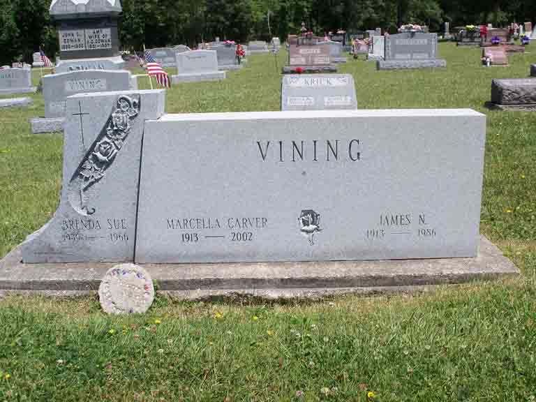

Documentation for James N. Vining - Mildred Marcella Carver
Death Data
Headstone for James N. Vining and Mildred Marcella (Carver) Vining, and daughter Brenda Sue Vining, in Willshire Cemetery, Willshire, Van Wert County, Ohio (from Find A Grave):
